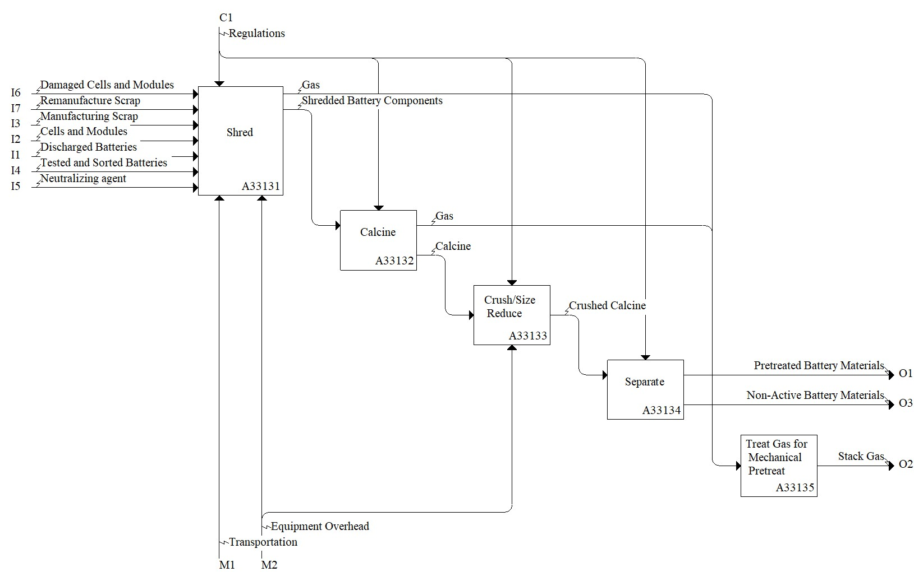

Model: A3313: Mechanically/Chemically Pretreat Material

Description
Notes:
This activity is completed to reduce the size and heterogeneity of materials, further sort battery material and cells, or improve the safety state of the material. Can include neutralizing step.
This often results in the formation of black mass (aka black powder, black sand, etc.), which is material that can undergo hydro- or pyrometallurgical activities.
Definitions:
Feed (stock) – material being supplied to a processing machine.
Black Mass - shredded battery material.
Pre-treatment - activity (e.g. drying, grinding, grading) applied to a material before it enters the main treatment process. Adapted from ISO 11074:2025, 3.343.
Standards:
References:
Mousa E, Hu X, Ånnhagen L, Ye G, Cornelio A, Fahimi A, Bontempi E, Frontera P, Badenhorst C, Santos AC, Moreira K, Guedes A, Valentim B (2022) Characterization and thermal treatment of the black mass from spent lithium-ion batteries. Sustainability, 15(1), 15. https://doi.org/10.3390/su15010015
Pinegar H, Smith YR (2019) End-of-life lithium-ion battery component mechanical liberation and separation. JOM, 71(12), 4447-4456. https://doi.org/10.1007/s11837-019-03828-7
Pinegar H, Smith YR (2020) Mechanical Beneficiation of End-of-Life Lithium-Ion Battery Components. In Energy Technology 2020: Recycling, Carbon Dioxide Management, and Other Technologies (pp. 259-267). Cham: Springer International Publishing. https://doi.org/10.1007/978-3-030-36830-2_25
Wang H, Liu C, Qu G, Zhou S, Li B, Wei Y (2023) Study on pyrolysis pretreatment characteristics of spent lithium-ion batteries. Separations, 10(4), 259. https://doi.org/10.3390/separations10040259